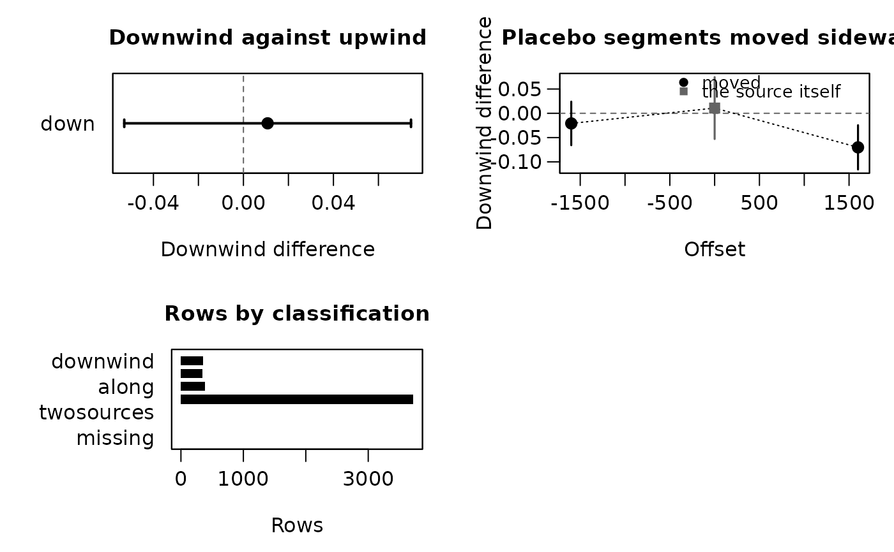

Compares counts on the downwind side of a pollution source with counts on its upwind side on the same day, the design of Herrnstadt, Heyes, Muehlegger and Saberian (2021) for the interstates of Chicago (first as Herrnstadt and Muehlegger 2015). The upwind side shares the day's weather and everything else about the day near that road, so it is the control for the downwind side; the side fixed effects take out what differs between the two sides on every day.
Usage
updwn(
data,
y,
ax,
ay,
day,
wind,
src,
area = NULL,
tol = 60,
band = Inf,
dist = NULL,
twin = c("drop", "near", "keep"),
agg = TRUE,
norm = c("mean", "none", "log", "pois"),
wx = NULL,
se = c("hc1", "cluster", "twoway", "nw", "boot"),
ssc = c("G", "nk", "none"),
clus = NULL,
lag = NULL,
nboot = 199,
seed = NULL,
offs = NULL,
level = 0.95
)
# S3 method for class 'updwn'
print(x, ...)
# S3 method for class 'updwn'
summary(object, ...)
# S3 method for class 'updwn'
plot(x, ..., main = NULL, col = NULL, pal = NULL)Arguments
- data
A data frame, one row per area and day.
- y
The name of the count column.
- ax, ay
The names of the columns of the areas' planar coordinates.
- day
The name of the day column.
- wind
The name of the wind-direction column (degrees, blowing from).
- src
A data frame of sources: columns
x0,y0, andx1,y1(NAfor a point source; the columns may be left out when every source is a point).- area
NULLor the name of the area column (needed for point sources and foragg = FALSE).- tol
The angle in degrees, above 0 and at most 90.
- band
The largest distance of an area from its source, in the coordinates' unit.
- dist
NULLor increasing breaks of distance from 0 for rings.- twin
"drop","near"or"keep".- agg
TRUEto sum the areas on each side of each segment by day.- norm
"mean","none","log"or"pois".- wx
NULLor the names of weather columns, constant within a side and day.- se, ssc, lag, nboot, seed
As in
ppmlfe(); the units of"nw"are the sides (areas) and the time isday.- clus
NULL(for"cluster", the sides) or the names of cluster columns, constant within each side (area) and day.- offs
NULLor offsets (in the coordinates' unit, positive to the left of each segment) for the placebo segments; segments only.- level
The confidence level.
- ...
Not used by
print()andsummary(); forplot(), passed to the base-graphics call.- object, x
An object of class
updwn(for the methods).- main
NULL(a default title) or one string.- col
NULL(the palette) or colours.- pal
NULL(the session palette, seeplotopt()) or a palette name forblpal().
Value
An object of class updwn, a list: coef, the rows of the
downwind terms (one, or one per ring); class, the rows by outcome of
the classification (downwind, upwind, along (wind along the road
or crosswind), nosource, twosources, onsource, missing); n,
the rows of the fit; fit, the fit; placebo, NULL or one row per
offset (off, est, se, lo, hi, p, n); norm, tol,
band. summary() returns coef, with the placebo rows when there
are any.
Details
What a user must supply, for any city and any source: planar
coordinates (projected, in one unit such as metres) of each area and of
each source; the daily wind direction at each row (where the wind blows
from, degrees clockwise from north, the direction of the day's mean
wind vector: see windiv()); and the count of each area and day. A
source is a straight segment (x1, y1 given; split a bending road
into straight segments, as the paper splits I-90) or a point (x1,
y1 NA: a stack, a port, an airport).
The classification (crimlab's kernel, following the paper's rules). An
area belongs to a source within band of it. For a segment, the side of
the area is set by which side of the line it lies on; the area is
downwind on a day when the direction the wind blows to is within tol
degrees of the line orthogonal to the road pointing to its side, upwind
when within tol of the opposite direction, and the day is dropped for
that road otherwise (wind along the road). For a point source the same
rule applies to the direction from the source to the area: this extends
the design and is not in the papers.
The choices, with the paper's own first:
tol: 60 degrees in the paper's main results (p. 12); 30 to 90 in its robustness table (pp. 15-16).band: one mile (1609 m) in the paper (footnote 23); a quarter mile to one mile in its robustness table.dist(breaks of distance) gives one downwind coefficient per ring instead, the paper's finding that the effect declines with distance.twin, areas withinbandof two sources:"drop"as the paper (p. 11-12);"near"gives them to the nearer source;"keep"counts them for each source.norm, the outcome:"mean", counts divided by their mean over the rows used, least squares (the paper's main tables: the coefficient is a share of the mean count);"none", raw counts, least squares;"log",log(1 + y), least squares;"pois", the Poisson pseudo-likelihood ofppmlfe()(the paper's appendix table A.1).wx: weather columns interacted with the side effects, the paper's equation (4), p. 14, which lets each side respond to the weather in its own way (one side's interactions are left out: the route-date effects absorb the weather itself).se:"hc1"(the default), robust errors as the paper reports;"cluster"(byclus, such as side-month or side-year as in its appendix table A.2),"twoway","nw"(Newey-West within each side over days, its appendix too) or"boot", as inppmlfe(). Stata's robust errors usen / (n - K); here that isssc = "nk".
The estimate is the paper's equation (3), p. 12: y_ist = a_is + g_it + b downwind_ist + e_ist, with route-side fixed effects a_is and
route-date fixed effects g_it; with agg = TRUE the counts of the
areas on one side of one segment are summed by day first, as the paper
counts crimes by interstate side and day. Without aggregation (and for
point sources) the first effect is the area.
Placebos. Run the design on an outcome the exposure should not affect
(the paper uses property crime); and, with offs, move every segment
sideways by each offset and re-estimate, the paper's placebo
interstates drawn parallel to I-290 a mile apart (pp. 17-18): the effect
should peak at offset 0.
plot() draws the downwind difference with its interval (by
distance, at the midpoints of the rings, with dist), the
estimates of the placebo segments by offset with the source itself
marked (with offs), and the rows of each classification; it returns
a list of what it drew (coef, placebo, class). The object holds
the difference of the two sides, not each side's level, so the sides
are not drawn apart.
References
Herrnstadt, E., Heyes, A., Muehlegger, E. and Saberian, S. (2021). Air pollution and criminal activity: microgeographic evidence from Chicago. American Economic Journal: Applied Economics, 13(4), 70-100. doi:10.1257/app.20190091
Herrnstadt, E. and Muehlegger, E. (2015). Air pollution and criminal activity: evidence from Chicago microdata. NBER Working Paper 21787. doi:10.3386/w21787
Examples
# simulated: a road along the x axis, areas on both sides, crime up 10%
# on the downwind side
set.seed(5)
a <- data.frame(area = 1:40, ax = runif(40, 0, 5000),
ay = runif(40, -4000, 4000))
d <- merge(a, data.frame(day = 1:120))
d$wind <- runif(120, 0, 360)[d$day]
blowsn <- cos((d$wind + 180) * pi / 180) # +1 when the wind blows north
dn <- abs(d$ay) < 1600 &
((d$ay > 0 & blowsn > 0.5) | (d$ay < 0 & blowsn < -0.5))
d$crimes <- rpois(nrow(d), 3 * (1 + 0.1 * dn))
road <- data.frame(x0 = 0, y0 = 0, x1 = 5000, y1 = 0)
u <- updwn(d, "crimes", "ax", "ay", "day", "wind", road, band = 1600,
offs = c(-1600, 0, 1600))
u
#> updwn: downwind against upwind, 154 side (area) days, outcome over its mean, tolerance 60 degrees
#> term est se stat p lo hi
#> down 0.01076 0.03251 0.3309 0.7407 -0.05296 0.07448
#> rows by classification:
#>
#> downwind upwind along nosource twosources onsource missing
#> 351 342 387 3720 0 0 0
#> placebo segments moved sideways:
#> off est se lo hi p n
#> -1600 -0.02086 0.02290 -0.06575 0.02403 0.362503 154
#> 0 0.01076 0.03251 -0.05296 0.07448 0.740707 154
#> 1600 -0.07013 0.02327 -0.11574 -0.02453 0.002577 154
plot(u)

# the Poisson model and two distance rings
summary(updwn(d, "crimes", "ax", "ay", "day", "wind", road, band = 1600,
norm = "pois", dist = c(0, 500, 1600)))
#> term est se stat p lo
#> 1 down:[0,500] 0.11314531 0.06794356 1.6652838 0.09585616 -0.02002163
#> 2 down:(500,1.6e+03] -0.03814761 0.04628543 -0.8241818 0.40983628 -0.12886538
#> hi rr
#> 1 0.24631225 1.1197946
#> 2 0.05257017 0.9625708